AI Academy · Level 1 · Grade 6 · Week 13 · Student lesson
Learning from Examples
Learn to understand, design, build, test and explain AI systems responsibly.
Project: Helpful Classroom Sorter
Before you start
Weeks 7–8: labels and features have different roles.
Plan time to read, investigate and explain. Keep predictions separate from observations.
Student lesson · 1 of 18
Your mission
Start with the target: Fit a threshold by tracing predictions and counting disagreements for every candidate. Try the recall before opening notes.
Your learning target
I can fit a threshold by tracing predictions and counting disagreements for every candidate.
I can apply an explicit tie rule while recording what the fitting examples leave unresolved.
I can use a selected rule on a new input and explain why fit alone does not establish future correctness.
Remember before reading
Close your notes first. A rough first answer helps us choose the right starting point; it is not a score for your ability.
Without opening the old lesson, explain one key idea from Debug the Cause. Give an example and a mistake that the idea helps you avoid.
Without opening the old lesson, explain one key idea from If/Then Decisions. Give an example and a mistake that the idea helps you avoid.
Without opening the old lesson, explain one key idea from Categories and Labels. Give an example and a mistake that the idea helps you avoid.
After trying, check the relevant lesson or ask your teacher. Change the part of your explanation that the evidence shows was wrong.
Training examples influence how a model handles later inputs.
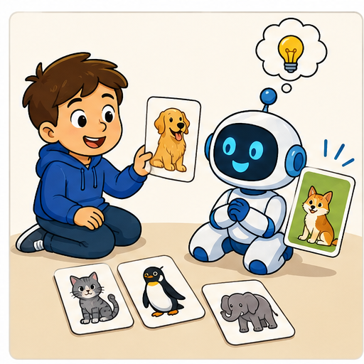
Your target
LEARNING TARGET Training cards show lengths 2,3 labelled S and 7,8 labelled L. Two proposed rules are 'L at 5 or above' and 'L at 7 or above'. Both fit training.
Choose one new labelled card length that would distinguish them and explain what remains unknown.
Learner name:
Readiness for the connected explanation
A rule predicts tall when height is at least 5 cm. What does it predict at 4, 5 and 6 cm? Why is 5 a useful boundary test?
This week’s end goal
By the end, I can compare candidate models, resolve a tie explicitly and separate fit from prediction.
Student lesson · 2 of 18
Notice the evidence
Investigate the supplied Learning from Examples case. Separate observations, given facts and assumptions before choosing an explanation.
PICTURE STORY
Look Closely Before You Explain
Pictures give clues; evidence tells us what the clues mean.

Start with this puzzle
MYSTERY A learner shown mostly striped triangles may wrongly treat stripes as the important clue for the triangle label.
What do you notice?
Name three visible details without explaining them yet.
Circle the detail most connected to the system's decision.
Name one detail that may be decoration or distraction.
Make a first prediction and state the clue that supports it.
My observations, prediction, and evidence:
Thinking habit
GOOD THINKING A prediction can change when stronger evidence appears.
A closer explanation
Four imaginary paper towers have heights 2, 4, 6 and 8 centimetres. Their supplied labels are short, short, tall and tall. These labels belong to this classroom task; they are not a universal definition of tall.
We will fit a rule using height as its only input.
Every candidate predicts tall when height is at least its threshold and short otherwise. Compare thresholds 3, 5, 6 and 7 centimetres. The fitting procedure chooses the fewest disagreements with the four labels.
If candidates tie, choose the smaller threshold. Write these choices before comparing results.
For each candidate, start its count at zero. For each example, predict with that candidate, compare with the supplied label, and add one only for a disagreement. After all four examples, record the count.
Then move to the next candidate with a fresh count. This uses the conditions and repetition you have already traced.
Student lesson · 3 of 18
See how it works
Follow the mechanism for Learning from Examples. Connect each labelled input, deciding step and result.
VISUAL MECHANISM
Input → Process → Output
Follow the information instead of imagining magic inside the machine.
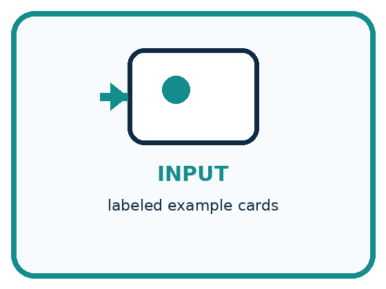
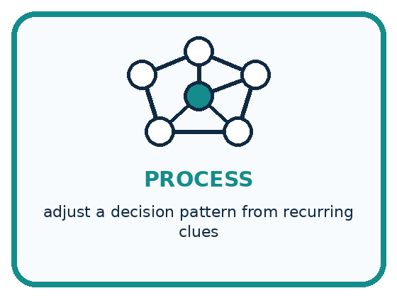
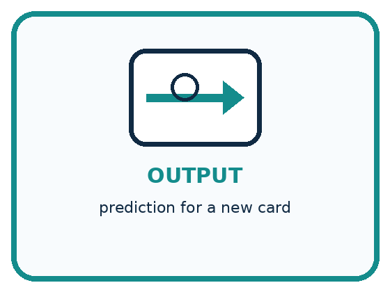
INPUT labeled example cards
PROCESS adjust a decision pattern from recurring clues
OUTPUT prediction for a new card
Key idea
CORE IDEA Training examples influence how a model handles later inputs.
How the mechanism works
UNDER THE HOOD Supervised learning uses labeled examples to fit a mapping from represented inputs to outputs.
The model does not store a human rule automatically; its fitted behavior reflects correlations, coverage, labels, and optimization choices.
Draw a fresh example with all three stages:
A closer explanation
Disagreements on the four fitting examples
Threshold 3 incorrectly calls the height 4 tower tall. Threshold 7 incorrectly calls the height 6 tower short. Thresholds 5 and 6 agree with all four supplied labels.
Check each disagreement against the individual example instead of trusting a total without its trace.
The bar chart compares disagreement counts, so a shorter bar is better on this fitting set. Zero is a measured count here, not missing data. This chart says nothing yet about the error count on new towers.
Connect the picture and the explanation
Point to the input, the deciding step and the result in this week’s visual. Explain the same step in ordinary words. A picture helps when you can say what each part represents.
Student lesson · 4 of 18
Compare the cases
Compare the supplied cases for Learning from Examples. Identify the detail that changes the conclusion.
PICTURE GALLERY
Four Cases, Four Clues
Use the visual cue, then read the evidence carefully.
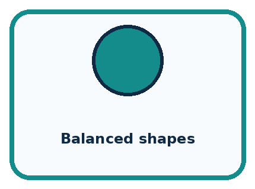
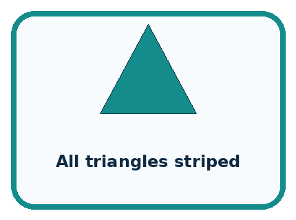
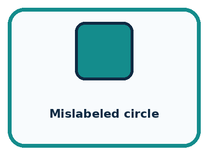
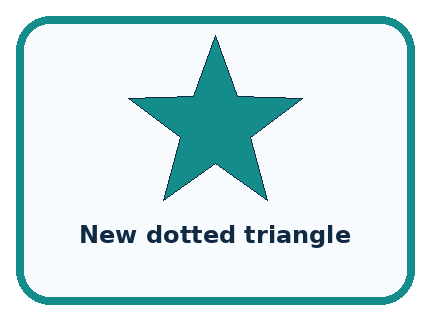
The case to investigate
CASE 1 — Balanced shapes Clue: colors vary within each shape. Meaning: shape clue becomes clearer.
The case to investigate
CASE 2 — All triangles striped Clue: stripe and triangle always co-occur. Meaning: confounded clue.
The case to investigate
CASE 3 — Mislabeled circle Clue: target is incorrect. Meaning: label noise.
The case to investigate
CASE 4 — New dotted triangle Clue: unseen combination. Meaning: tests learned behavior.
Keep this boundary clear
BOUNDARY Learning from examples is not the same as memorizing every example or understanding the concept like a person.
Which two pictures are easiest to confuse? What evidence separates them?
Change one thing in the pictured case
Change one thing
Change: Reverse the tie policy to prefer the larger boundary.
Predicted result
Prediction: Boundary 7 is selected and predicts short at 6.
Why the result follows
Reason: The training fit is unchanged; only the explicit choice between tied candidates changes.
Student lesson · 5 of 18
Words that unlock the idea
Use the vocabulary of Learning from Examples to explain a concrete decision, rather than only memorising definitions.
VOCABULARY
Words You Can See and Use
The badge is a memory cue; the definition does the real thinking work.
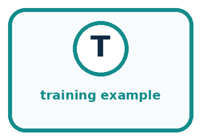
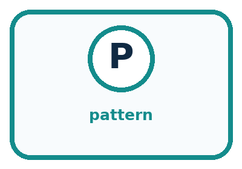
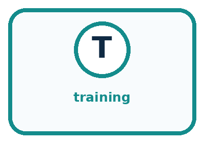
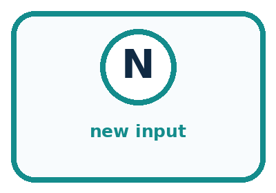
| Word | Meaning | My example |
|---|---|---|
| training example | input paired with a target label | |
| pattern | recurring relationship across examples | |
| training | fitting behavior from examples | |
| new input | case not used in fitting |
Misconception detective
Find the unsupported claim
CLAIM TO REPAIR The model discovers the one true rule hidden in nature.
Use one vocabulary word and one piece of evidence to repair it:
WORD POWER A strong definition helps you decide something in a new case.
Words used in the closer explanation
| Word | Meaning |
|---|---|
| Candidate model | One possible rule being compared during fitting |
| Fitting set | The examples used to choose or adjust a model |
| Disagreement count | The number of predictions that differ from their comparison labels |
| Tie rule | An explicit method for choosing between equally scoring candidates |
| Generalisation | How well a fitted model works on new cases beyond its fitting examples |
Student lesson · 6 of 18
Follow a worked example
Follow the worked trace for Learning from Examples, predict a step, then compare with its explanation.
WORKED EXAMPLE
Watch the Reasoning, Not Just the Answer
Every step connects a claim to observable evidence.

The case to investigate
CASE A learner shown mostly striped triangles may wrongly treat stripes as the important clue for the triangle label.
Step 1
STEP 1 — OBSERVE labeled example cards
Step 2
STEP 2 — TRACE adjust a decision pattern from recurring clues
Step 3
STEP 3 — CONCLUDE prediction for a new card
Model answer
MODEL REASONING Early examples may support several rules. New examples eliminate some possibilities and may change the decision boundary. Record each revision as evidence that training data shapes later behavior.
A claim to avoid
DO NOT OVERCLAIM Learning from examples is not the same as memorizing every example or understanding the concept like a person.
What new evidence could change this answer?
A closer explanation
| Height and supplied label | Prediction under threshold 5 | Prediction under threshold 6 |
|---|---|---|
| 2 cm short | Short | Short |
| 4 cm short | Short | Short |
| 6 cm tall | Tall | Tall |
| 8 cm tall | Tall | Tall |
| 5 cm label not yet supplied | Tall | Short |
Worked explanation · Learning from Examples
The first four rows are fitting examples. The final row asks what the two tied candidates predict at a height missing from that set. Our tie rule selects 5, so the selected model predicts tall at 5.
The fitting examples alone do not tell us whether that new prediction matches the task label.
A tie rule makes the selection reproducible. It does not prove that the chosen threshold is the true boundary. Record that 6 tied with 5 and that they disagree at height 5.
Hiding the tie would hide a real limitation of the available evidence.
Learn from the worked case
Cover the result before checking it. Say what is given, choose the procedure, and follow one step at a time. Then uncover the result and explain your first mismatch. Ask why a step is allowed, not only what number it produces.
A pictorial worked case: Learning from Examples
A fictional classifier learns whether measured sticks are short or long.
The facts we will use
Supplied facts
Training lengths 2,4,8,10 cm have labels short,short,long,long.
Supplied facts
Candidate boundaries: long at least 5 or at least 7. Lowest errors wins; tie chooses smaller boundary.


Read the picture one step at a time
Why this result follows
Why the result follows
There is no training stick between 4 and 8 to distinguish these candidates. The tie policy chooses one consistently; it is not additional evidence that its prediction at 6 is true.
Label-free prediction applies the selected boundary, while evaluation would require an appropriate new reference label.
What this example does not establish
Keep the stated limit
Zero training errors for both rules cannot determine the correct label of every unobserved stick.
Keep the stated limit
Read the labelled picture: Which new measured length would reveal disagreement between the candidates?
Keep the stated limit
Change one thing: Reverse the tie policy to prefer the larger boundary. Predict the result before checking the explanation. What remains the same?
Student lesson · 7 of 18
Find and repair a mistake
Find the unsupported step in the Learning from Examples claim and explain a repair using the supplied evidence.
COMPARE
Same Result, Different Reason
A comparison helps reveal the true concept boundary.
| Case | Evidence | What it shows |
|---|---|---|
| Balanced shapes | colors vary within each shape | shape clue becomes clearer |
| All triangles striped | stripe and triangle always co-occur | confounded clue |
| Mislabeled circle | target is incorrect | label noise |
| New dotted triangle | unseen combination | tests learned behavior |
Repair two tempting claims
Challenge claim A
CLAIM A The model discovers the one true rule hidden in nature.
Repair:
Challenge claim B
CLAIM B One example is enough to learn a reliable category.
Repair:
A frame for explaining
STRONG ANSWER FRAME I claim ______ because the evidence shows ______. The process is ______. One limit is ______.
A closer explanation
The best candidate means best among the candidates compared, using this counting rule and these recorded labels. A different candidate family, feature or label policy might give a different result.
People chose those ingredients; fitting does not remove those choices.
Check the claim against the facts
If two records with identical input height have different labels, any deterministic rule using only that height gives them the same prediction. It must disagree with at least one label.
Investigate the records and task definition instead of silently changing a label to make the model look perfect.
Student lesson · 8 of 18
Practise together
Practise Learning from Examples with support, then explain the deciding step in your own words.
GUIDED PRACTICE
Try It, Check It, Explain It
Use support now so you can succeed independently later.

Explain how the picture story demonstrates this idea: Training examples influence how a model handles later inputs.
Use a fresh example to explain training example.
Trace a new input → process → output example.
Find and repair the error in: One example is enough to learn a reliable category.
Invent one edge case and name the safe response.
Check with a partner
PARTNER CHECK Point to the evidence. Do not accept an answer that only repeats the vocabulary word.
A closer explanation
Suppose the task designer supplies an additional fitting example: height 5 centimetres, label short. Compare thresholds 5 and 6 again using all five fitting examples.
Do not discard the original four when adding the new example.
A label that helps choose the threshold participates in fitting. This is allowed, but it changes what the example can establish. We must use separate evidence to evaluate the selected model beyond the examples that shaped it.
Week 15 will develop that separation in detail.
Practise with less help: Explain a tied fit
Use workbook W2 for the connected example “Fitting a pattern from examples”. First fill the input and rule boxes. Try the middle steps before asking for a hint. After a hint, try the next step yourself.
| Plan | Do | Check |
|---|---|---|
| What is given? Which rule or procedure applies? | Record each intermediate step. | Does the result follow? What remains unknown? |
Explain your trace to a partner. Your partner points to one step to check. Swap roles on the next case. Each person writes their own explanation.
Check your reasoning
Use the worked case for Fitting a pattern from examples. Proposed explanation: “The lowest error count is added across candidates”. Decide whether this explanation is supported.
Point to the step or supplied fact that decides; explain your repair if needed.
Answer on your own before discussion. If you are unsure, say which step you need help with.
Explain the picture
Which new measured length would reveal disagreement between the candidates?
This is supported practice. Keep the separately named independent case for an attempt before feedback.
Student lesson · 9 of 18
Run the investigation
Investigate Learning from Examples. Record the prediction, actual observation or labelled paper trace, explanation and next test separately.
EXPLORER LAB
Human Shape Model
Predict first, test honestly, and explain what the evidence means.

1. Predict
State your prediction before the result is known.
2. Investigate
Complete the task: Act as a model trained on shape cards; record rule changes.
3. Compare cases
Keep a normal case and an edge case clearly separated.
4. Record honestly
Record what happened—even when it does not match your prediction.
5. Explain and plan the next test
Explain the result, one limitation, and the next useful test.
| Case | Prediction | Observed result | What it means |
|---|---|---|---|
| Normal | |||
| Edge |
Use a fresh case after support
INDEPENDENCE After support is removed, repeat the proof with a fresh case.
Plan → try → check
Before trying: what do I expect, and why? While trying: which step could first go wrong? Afterwards: what did I actually observe, and what should change? Keep “not run” if you only traced the procedure.
Student lesson · 10 of 18
Build your understanding
Move from recall to tracing, diagnosis and transfer in Learning from Examples. Explain why each step is justified.
PRACTICE LADDER
Climb from Recall to Defense
Each step asks for a stronger kind of understanding.

RECALL Define training example.
EXPLAIN Training examples influence how a model handles later inputs.
TRACE Show the input, process, and output.
DIAGNOSE Repair: The model discovers the one true rule hidden in nature.
TRANSFER Apply the idea to a new home or classroom case.
CREATE Design one revealing test.
DEFEND Give a claim, evidence, mechanism, limit, and safe action.
When to retry
RETRY RULE A coached answer becomes mastery only after you solve a different case independently.
Student lesson · 11 of 18
Connect your project
Apply this week’s idea to Helpful Classroom Sorter. Keep an annotated decision and the evidence supporting it.
PROJECT
Helpful Classroom Sorter
Build one coherent system across the year, one evidence-based decision at a time.

THIS WEEK'S CHECKPOINT Create the first small labeled example set for the sorter and explain which visual differences it covers.
What real classroom need does this serve?
What information is necessary—and what should stay private?
What happens inside the process?
What normal and edge cases will you test?
When should it say not sure or ask a person?

Responsible design
RESPONSIBLE DESIGN Learning from examples is not the same as memorizing every example or understanding the concept like a person.
My project decision:
Evidence for your project
Save candidate definitions, training errors and tie policy with any sorter model version.
Student lesson · 12 of 18
Show what you know
Use a genuinely new case for independent evidence. Previously discussed examples remain practice; use the separately named independent case before feedback.
MASTERY
Fresh-Case Independent Proof
Complete this after teaching and guided practice have ended.

What success looks like
REQUIRED PROOF Train on shape cards, record how added examples change the inferred rule, and predict a new card.
□ Name or draw the fresh case.
□ Trace input, process, and output.
□ State the conclusion and strongest evidence.
□ Name one limit, failure, missing clue, or fairness/privacy concern.
□ Explain one safe next action or improvement.
Independent evidence:
Check your explanation
SELF-CHECK Early examples may support several rules. New examples eliminate some possibilities and may change the decision boundary. Record each revision as evidence that training data shapes later behavior.
My level: □ Not yet □ With one hint □ Independently □ I can teach it
Connect to the next lesson
NEXT BRIDGE Carry today's evidence habit into: Build a Human Classifier.
Student lesson · 13 of 18
Study a complete case
Revisit the complete Learning from Examples case for supported practice. Repeated examples do not become fresh assessments.
Week 13 Worked case
Use the supplied details to practise the weekly concept before attempting the independent question. This case extends the illustrated lesson.
The situation
Training examples label smooth leaves S and toothed leaves T. A new leaf is toothed.
The question
Predict and state the evidence limit.
Worked explanation
Predict T from the demonstrated edge pattern. One success does not establish broad reliability; use fresh labelled tests including ambiguous cases.
Explain it in your own words
Which detail supports the answer, and why does it matter?
Trace the supplied case visually
Examples suggest a pattern to test
| Evidence or stage | Value or result |
|---|---|
| Smooth leaves | Training label S |
| Toothed leaves | Training label T |
| New toothed leaf | Predict T |
| Fresh labelled cases | Check the prediction rule |
Training examples label smooth leaves S and toothed leaves T. A new leaf is toothed.
Predict and state the evidence limit.
Predict T from the demonstrated edge pattern. One success does not establish broad reliability; use fresh labelled tests including ambiguous cases.
Student lesson · 14 of 18
Try a new case independently
Attempt the reserved new case before feedback. Record support; the earlier examples below remain additional practice.
Independent case: Fit a new distance task
Imaginary map markers have distances 1, 3, 5 and 7 units, with supplied labels near, far, far and far. Compare candidates that predict far when distance is at least 2, 4 or 6 units.
List every prediction and error count, select the lowest-error candidate, then predict at distance 2 before any comparison label is supplied. Limit your conclusion.
Attempt this case before feedback. Record any help. Earlier examples below are further practice; a case already practised with feedback cannot establish fresh transfer.
Week 13 Independent application
Close the worked explanation. Apply the idea to this different question without copying.
A learner sees three red apples and no green apples, then calls a green apple not an apple. What missing evidence could help? How would you check improvement?
My answer, with a trace, calculation or supporting evidence
Create and test
Change one relevant detail. Predict the result before testing. Include a boundary or missing-information case when it helps reveal a limit.
My changed input and expected result
Connect to your project
Create the first small labeled example set for the sorter and explain which visual differences it covers.
The evidence I will keep
Your teacher has the independent answer and scoring criteria. Complete the matching workbook week to keep your practice evidence together.
Transfer practice from the original programme
Training cards show lengths 2,3 labelled S and 7,8 labelled L. Two proposed rules are 'L at 5 or above' and 'L at 7 or above'. Both fit training.
Choose one new labelled card length that would distinguish them and explain what remains unknown.
Use feedback to improve
Attempt the independent case before hints. Record whether you worked alone, used a hint or followed a model. After feedback, fix the first unsupported step and explain why it changed.
A later check uses a changed case, not a copied answer.
Student lesson · 15 of 18
Your lesson route
Use this map to navigate Learning from Examples, connect the goals to tasks and keep one evidence record for each attempt.
Start with this question: A fictional classifier learns whether measured sticks are short or long.
| By the end, I can | How I will show it |
|---|---|
| Fit a threshold by tracing predictions and counting disagreements for every candidate | Explain the deciding step, show a trace or test, and state one limit. |
| Apply an explicit tie rule while recording what the fitting examples leave unresolved | Explain the deciding step, show a trace or test, and state one limit. |
| Use a selected rule on a new input and explain why fit alone does not establish future correctness | Explain the deciding step, show a trace or test, and state one limit. |
Remember → watch and explain → try with help → investigate → try independently → keep project evidence. Your teacher may spread this lesson across several classes.
Keep your first prediction. Compare it with what the evidence shows and explain any change.
Student lesson · 16 of 18
Finish and return
Explain Learning from Examples without notes, identify a remaining question and plan a later check with a changed case.
Close your notes. Explain this goal in your own words: Fit a threshold by tracing predictions and counting disagreements for every candidate
If you are unsure, return to the worked picture and explain one arrow. If you are ready, change an input or assumption and justify your prediction.
Save your workbook evidence. At the next review, try a different case before opening your old answer.
Student lesson · 17 of 18
Supported practice, repair and portfolio
Attempt supported questions before using hints or feedback. Review a missing building block, then keep the completed work.
Use this supported practice once, in the browser or on paper. Keep the reserved independent assessment for a separate first attempt before teacher feedback.
A fictional classifier learns whether measured sticks are short or long.
Practice 1: explain the deciding evidence
Which labelled step matches this detail? Length 6 is predicted long by the selected rule.
1. Training rows
2. New prediction
3. Tie policy
4. Candidate checks
Hint · try first
Hint if needed: Read the steps in the pictorial case. Match the supplied detail to the stage that performs or records it.
Feedback · compare after trying
After your attempt, compare with the supported explanation: New prediction Length 6 is predicted long by the selected rule. There is no training stick between 4 and 8 to distinguish these candidates.
The tie policy chooses one consistently; it is not additional evidence that its prediction at 6 is true. Label-free prediction applies the selected boundary, while evaluation would require an appropriate new reference label.
Practice 2: explain the deciding evidence
Changed case · predict first
Changed-case practice: Reverse the tie policy to prefer the larger boundary. Which conclusion is supported by the supplied facts?
1. This one example guarantees correct results for every future input.
2. We can decide the result without examining the changed input or the procedure.
3. Boundary 7 is selected and predicts short at 6.
Hint · try first
Hint if needed: Use the changed condition and the deciding step in the pictorial trace. The answer must say what follows from those facts.
Feedback · compare after trying
After your attempt, compare with the supported explanation: Boundary 7 is selected and predicts short at 6. The training fit is unchanged; only the explicit choice between tied candidates changes.
Repair a missing building block
Review Debug the Cause (ai-1/12). Goal: Compare expected and observed traces to locate the first difference. Short practice: Propose input 0 and give both predicted outputs without inventing an observed result..
Return to this week and explain what you changed.
Review If/Then Decisions (ai-1/10). Goal: Evaluate a condition using the current state and trace only the selected branch. Short practice: Which input detects the difference between the two written conditions?
Explain its entire run.. Return to this week and explain what you changed.
Review Categories and Labels (ai-1/7). Goal: Apply a category definition using explicit evidence and boundary rules. Short practice: Explain why B originally was revise rather than review, then label its changed version..
Return to this week and explain what you changed.
Keep your completed work
Use Download completed work in the hosted lesson to export your answers, reflections, practice feedback and code-run evidence. Open the HTML copy to read or print it.
Drafts stay in this browser when storage is available; clear drafts on a shared device.
Student lesson · 18 of 18
Visual concept journey
Explain each Learning from Examples graphic using its labels, deciding evidence and relevant limitation.
01. Learning from Examples: the case

A fictional classifier learns whether measured sticks are short or long. Supplied facts: Training lengths 2,4,8,10 cm have labels short,short,long,long. Candidate boundaries: long at least 5 or at least 7.
Lowest errors wins; tie chooses smaller boundary.
Point to the given fact that matters most. Explain why it matters.
02. Follow the deciding steps

Training rows: 2 and 4 are short; 8 and 10 are long. → Candidate checks: Boundaries 5 and 7 both predict S,S,L,L: zero errors each. → Tie policy: Choose boundary 5 because the declared tie rule prefers the smaller value. → New prediction: Length 6 is predicted long by the selected rule.
Point to each numbered stage and explain which recorded input it uses.
03. Same training errors, different new prediction

Same training errors, different new prediction. Candidate 5: Boundary = 5, Training errors = 0, Prediction at 6 = long. Candidate 7: Boundary = 7, Training errors = 0, Prediction at 6 = short.
Read the labels and values. Explain the relationship the model shows.
04. Change one thing. Trace what follows.

Original case: Length 6 is predicted long by the selected rule. Changed condition: Reverse the tie policy to prefer the larger boundary. Expected result: Boundary 7 is selected and predicts short at 6.
Reason: The training fit is unchanged; only the explicit choice between tied candidates changes.
Predict before checking the worked changed-case result. Name what changed and what the supplied facts allow you to conclude.
05. Connect the explanation to its limit

There is no training stick between 4 and 8 to distinguish these candidates. The tie policy chooses one consistently; it is not additional evidence that its prediction at 6 is true.
Label-free prediction applies the selected boundary, while evaluation would require an appropriate new reference label. Limit: Zero training errors for both rules cannot determine the correct label of every unobserved stick.
Explain the case, then point to a limit on the claim.
06. Make the idea visible in your project

Save candidate definitions, training errors and tie policy with any sorter model version. Draw your input, deciding step, result and limit.
Supported question: Which new measured length would reveal disagreement between the candidates?
Draw your project trace and justify the deciding step using evidence.